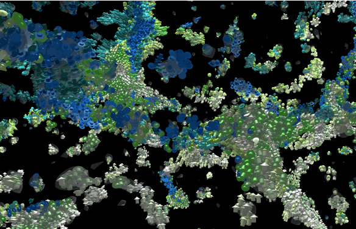

2019 IEEE Scientific Visualization Contest Winner: Visual Analysis of Structure Formation in Cosmic Evolution

Venue. CG&A (2020)
Authors. Karsten Schatz, Christoph Müller, Patrick Gralka, Moritz Heinemann, Alexander Straub, Christoph Schulz, Matthias Braun, Tobias Rau, Michael Becher, Steffen Frey, Guido Reina, Michael Sedlmair, others
Abstract. Simulations of cosmic evolution are a means to explain the formation of the universe as we see it today. The resulting data of such simulations comprise numerous physical quantities, which turns their analysis into a complex task. Here, we analyze such high-dimensional and time-varying particle data using various visualization techniques from the fields of particle visualization, flow visualization, volume visualization, and information visualization. Our approach employs specialized filters to extract and highlight the development of so-called active galactic nuclei and filament structures formed by the particles. Additionally, we calculate X-ray emission of the evolving structures in a preprocessing step to complement visual analysis. Our approach is integrated into a single visual analytics framework to allow for analysis of star formation at interactive frame rates. Finally, we lay out the methodological aspects of our work that led to success at the 2019 IEEE SciVis Contest.